動物フィギュアを中心に紹介するページ。


奇譚クラブ あすなろ舎 ご当地図鑑シリーズ
ご当地解剖図鑑：No.61～No.66
四国限定
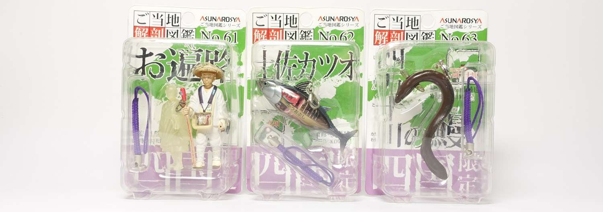 |
■概要
販売開始：2007年8月 発売元：あすなろ社 価格：700円
企画製造：奇譚クラブ 総監修：佐藤純也
全ラインナップはコチラ。
|
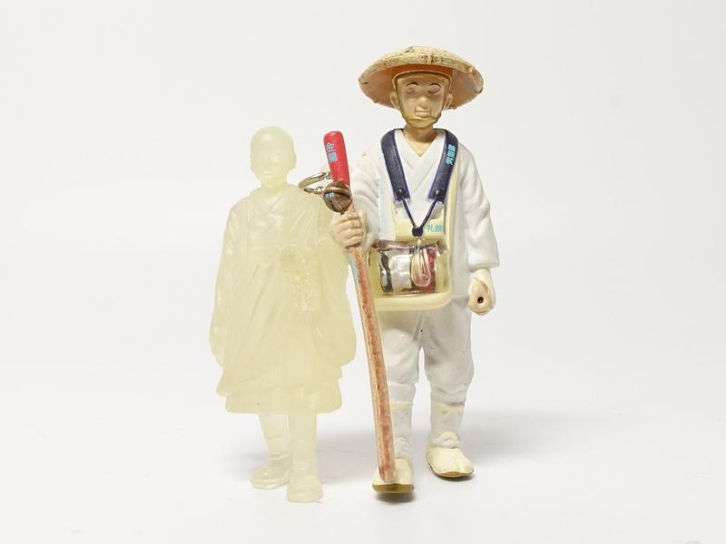 |
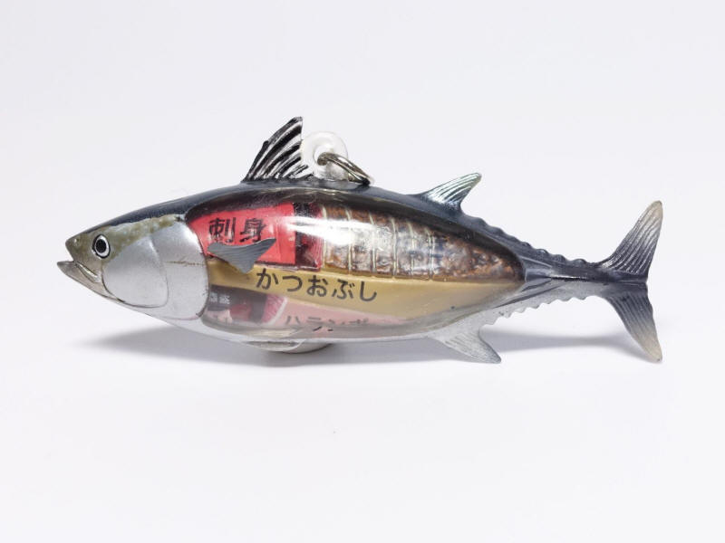 |
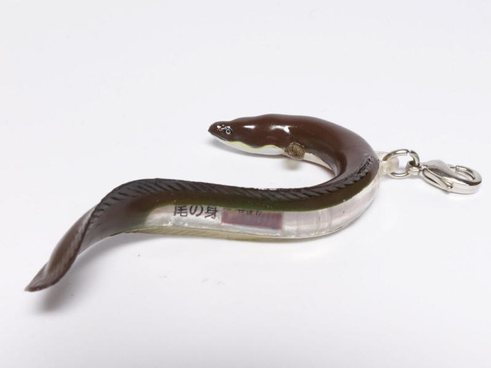 |
 |
|
| No. 61 四国限定 お遍路 |
|---|
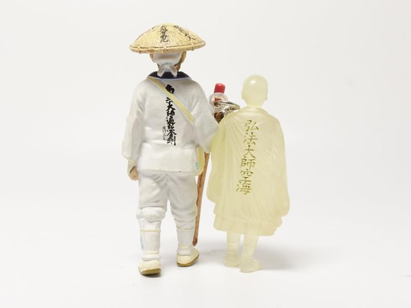 |
| 原型製作：松田モデル お遍路とは、弘法大師がかつて修行を行ったとされる、四国八十八箇所の霊跡を巡ること。 このフィギュアの面白いところは、巡礼者だけでなく、道中を見守る弘法大師も表現している点。 |
| 首から下げているのは山谷袋（さんやぶくろ）。中には参拝用具が入っています。 |
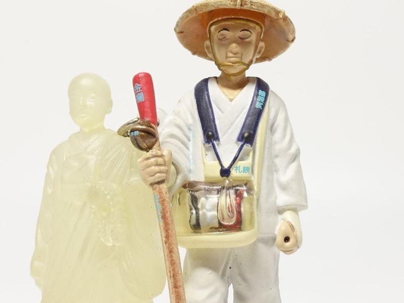 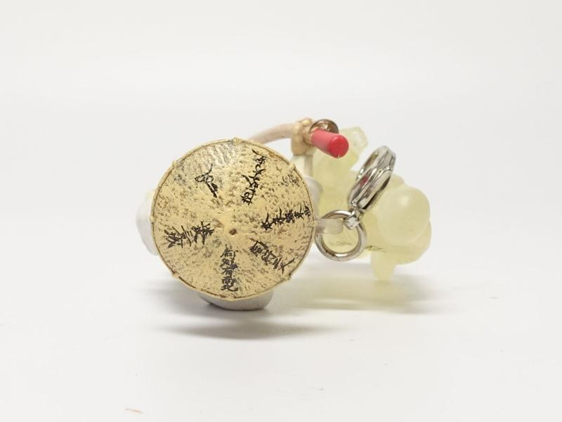 |
| 菅笠（すげがさ）に書かれた弘法大師に因んだ言葉も、細かくプリントされています。 |
| クリア素材で表現された弘法大師。 |
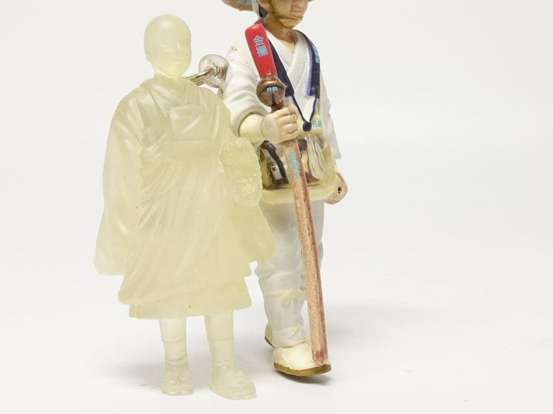 |
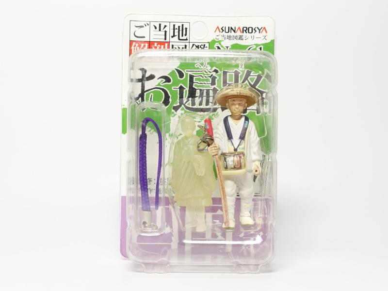 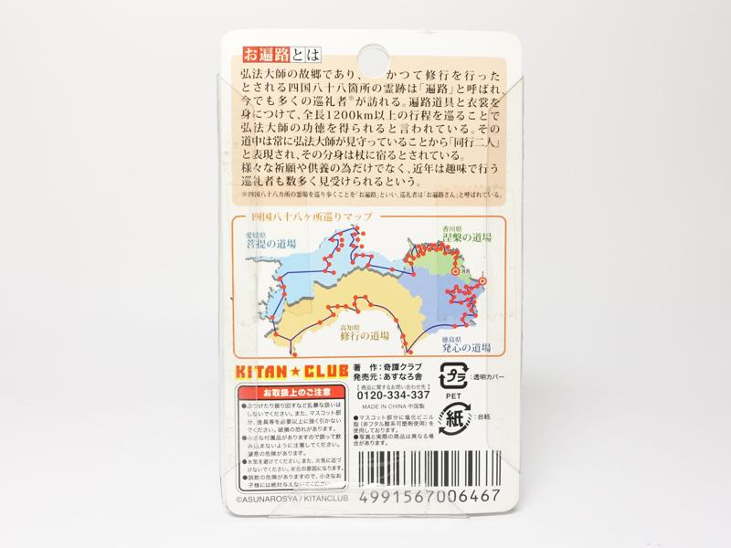 |
| No. 62 四国限定 土佐カツオ |
|
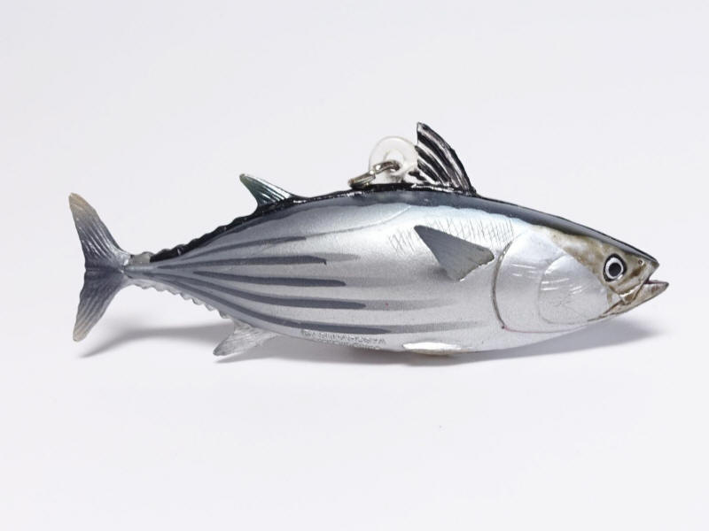 |
| 原型製作：KOW 土佐の「カツオの一本釣り」は、カツオの痛みを最小限にとどめ、エサへの食いつきがよい元気な個体を選出できる究極の漁法。 |
|
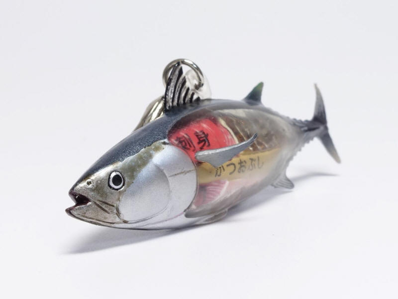 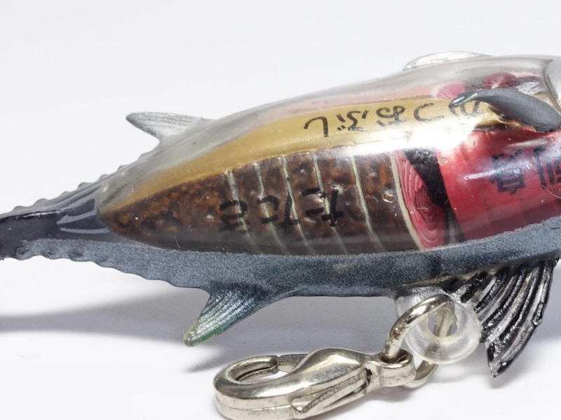 |
| 「かつおぶし」や「かつおのたたき」が、調理された姿で身に詰まっているのがおもしろい。 同じような外観の「なかみまるみえフィギュア」とは、コンセプトが違うのだ。 |
|
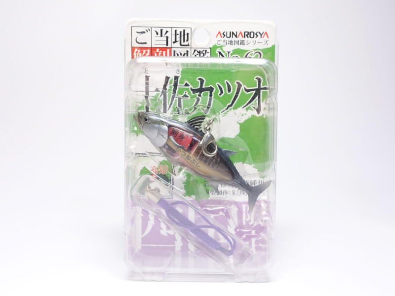 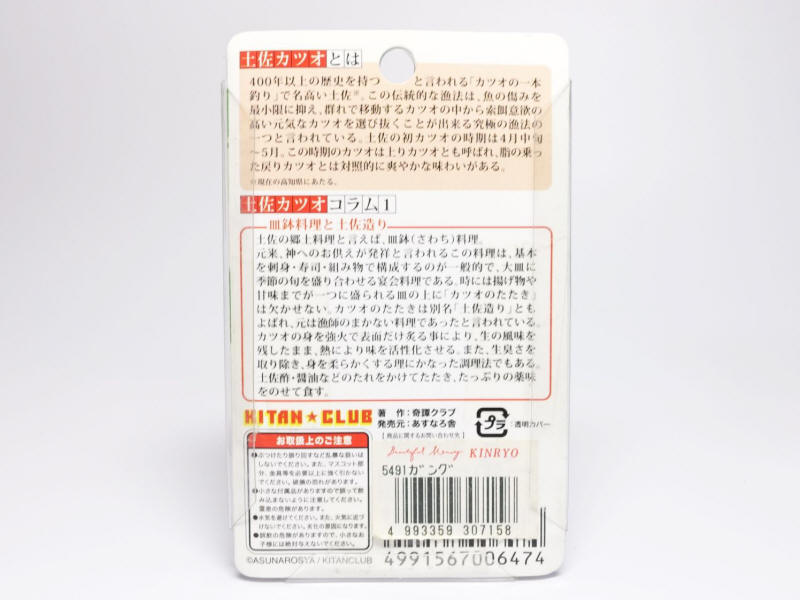 |
| No. 63 四国限定 四万十の鰻 |
|
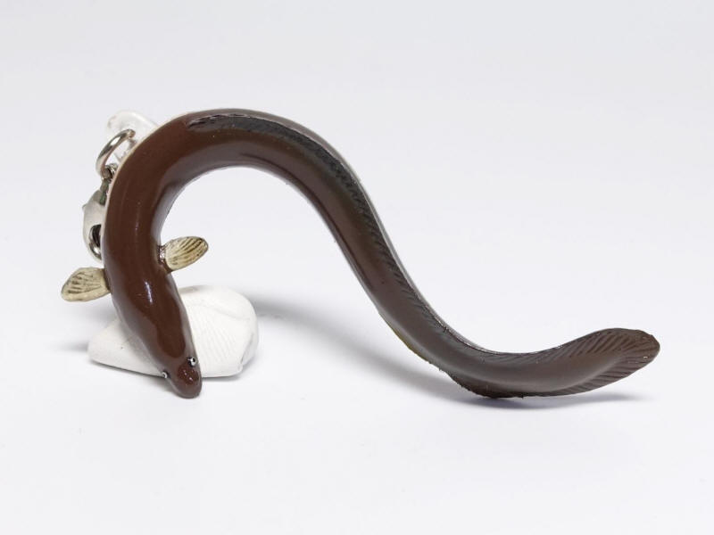 |
| 原型製作：KOW 「日本最後の清流」と言われる、高知県の四万十川でとれるウナギ。 一尾4,000円前後の高級品です。 |
|
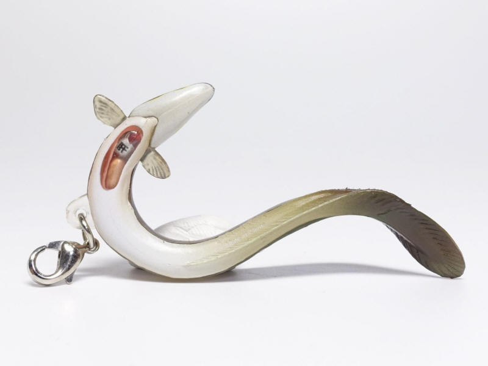 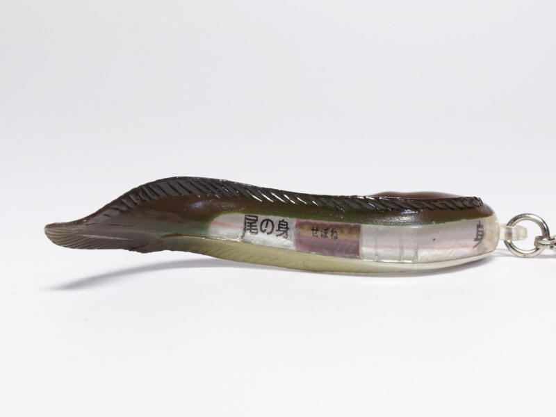 |
| 解剖部位は腹と右半身。 |
| 他のウナギとの違いは「No.23江戸前鰻」を参照してください。 |
  |
| No. 64 四国限定 オリーブ |
| 原型製作：KOW |
| No. 65 四国限定 伊予かん |
| 原型製作：KOW |
| No. 66 四国限定 鳴門うず潮 |
| 原型製作：KOW |
| ラインナップ |
| No. 61 四国限定 お遍路 (松田モデル) No. 62 四国限定 土佐カツオ(KOW) No. 63 四国限定 四万十の鰻 No. 64 四国限定 オリーブ No. 65 四国限定 伊予かん No. 66 四国限定 鳴門うず潮 |
| 全ラインナップはコチラ。 |